Journal · 2025-07-10
湖北省黄冈市黄梅县
黄梅上乡，在我的记忆中，是个遥远的国度。那里的人民，生活在大别山的余脉中，采茶种菜栽水稻，唱着举国皆知的黄梅戏，说着佶屈聱牙的上乡音。
赣北的年轻人就很疑惑，黄梅戏的唱腔，怎么听都像安徽话呀。学界普遍认为，1786年的一场大洪水，将黄梅采茶调送给了安徽人民！举国皆知的黄梅戏，就和黄梅各乡的方言口语无缘啦！我的一位室友在九江长大，其阿婆是安徽人，就误以为“黄梅是安徽的”。
我祖籍江西，户口黄梅，和《魔戒》中的 Frodo 一样，对乡土“夏尔国”的大半地域不甚了解。包括城关镇在内的上乡地区，还有黄梅一中、问梅村、挪步园、黄梅禅宗、四祖五祖老祖，似乎跟“台澎金马”一样神秘！
幸运的是，那股神秘感，在今年的七月上旬，彻底消失了！华科经济学院的一个索然无味的安排，让本院的两位本科生忙忙碌碌，也让外院的小槑同学卷入其中！暑期思政社会实践、乡村振兴大赛、百户千村调研活动，这三个项目，真的让人感到无言以对呢。
小槑同学在黄梅镇的潘湖路，找个旅馆就勉强接受了，也就暂住了。那里是郊区，农田旷野，郁郁青青，离黄梅一中 5.4 公里。每当日落西山，晚风微凉，他就骑着主人家的电瓶车，去一中门口的小吃街解决吃饭的问题，顺带考察一下当地的学府和商铺。
他在7月4日，参观了黄梅一中。东山问梅村、挪步园，本是在行程之内的，过后由于路程遥远，就搁置了。
总的来说，黄梅是一个慢节奏的小镇，夜生活还算丰富。一中门口就是小吃街，只有早夜经营，晚上很热闹。据说“奥尔良烤鸡腿”摊位有个师傅，之前跟同学们说，读不下去跟他学烤鸡腿，全黄梅就他和他师傅会这个！我虽然不信，但不得不承认这很有人间烟火！
7月6日的晚上，小槑骑电瓶车前往下新镇石畈村，穿过了几条高速，经过了几个社区，还见识到几个桥洞，几洼水塘，以及黑黢黢的山沟沟，最后被一群田园犬赶出了小镇。这一路，有点像黄梅下乡的孔垄、王埠、杨塘，骑车越来越颠，小动物越来越多，虫声越来越吵。山沟沟，桥洞洞，家家有狗路难走，一程山水尽不同。
离开下新镇，他便本能地前往一中小吃街，恰逢高一年级学期结束。同学们满心欢喜，有吃有喝，活蹦乱跳，把握这珍贵的暑假！有一说一，黄梅一中的校服挺好看的，肩袖是淡紫色的，很典雅清新！
当时经营“奥尔良烤鸡腿”摊位的是一位阿姨和一个小哥，他们推荐的绿豆冰沙真不错啊，清香纯甜，入口即化，舌上留甘。估计只有黄梅一中的学子，能够享受到世间如此的美味！
值得一提的是，黄梅的商铺，空调开得并不勤快。小槑在喻家山，害怕被空调吹感冒，总是随手提着一件正装夹克。来到黄梅镇，夹克衫只能用来接汗了，接的全是左手小臂上的汗。老天爷呀，下场雨吧，给汗身火热的黄梅人民降降温吧！
7月9日的晚上，小槑又一次走进黄梅一中，无意中发现：高二年级26个班！小小的黄梅，大大的学府！
最后还是有点遗憾，没有去成问梅村和挪步园。从黄梅一中出发，到东山问梅村，要走11.5公里；到挪步园，要走27公里。有些伤感，前途光明我看不见，道路曲折我走不完啊。悠悠苍天，何薄于我？造孽啊，以后再来逛逛吧。
别了，黄梅的学府！
别了，鄂东的明珠！
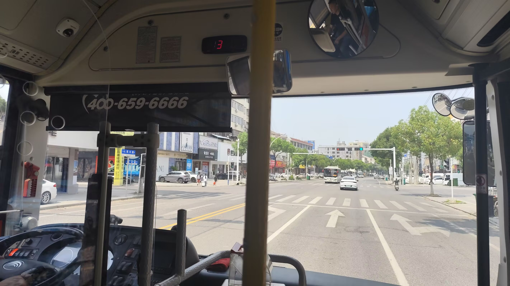
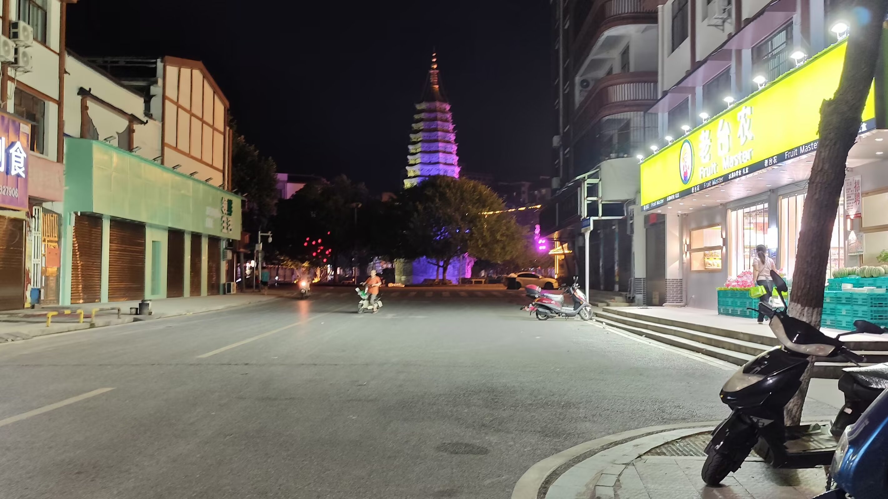
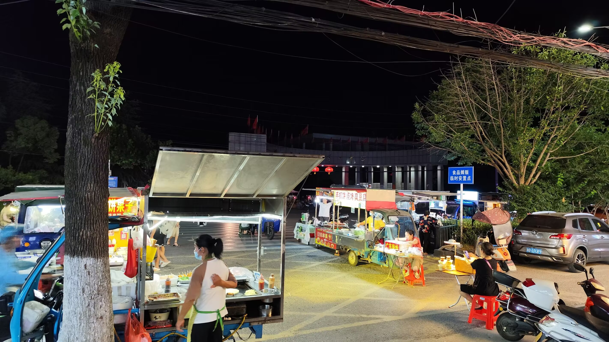
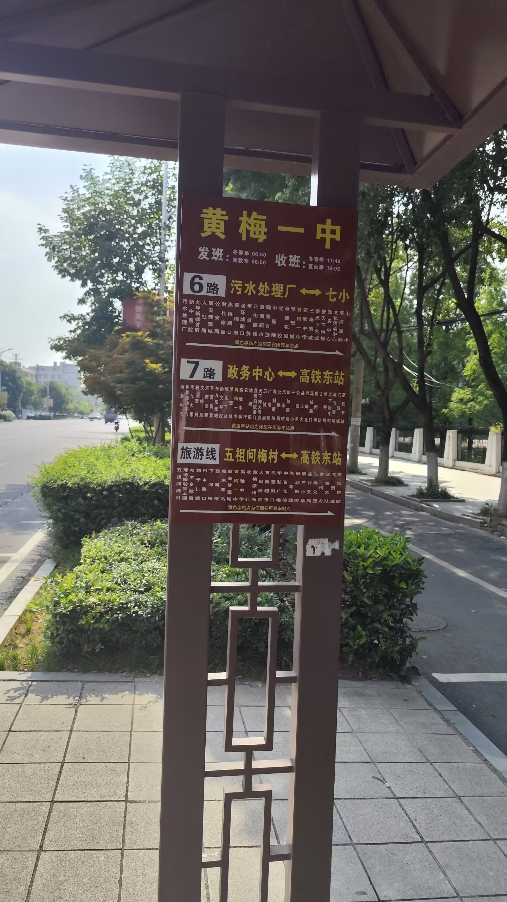
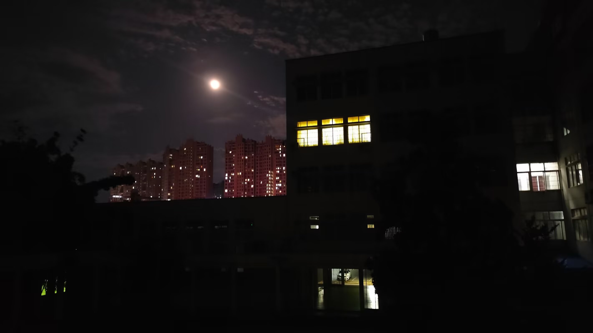
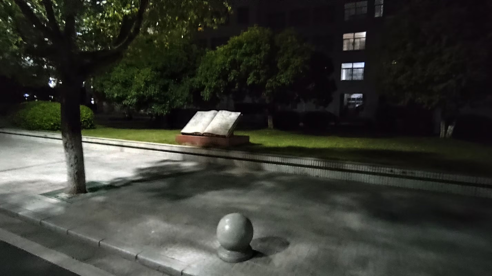
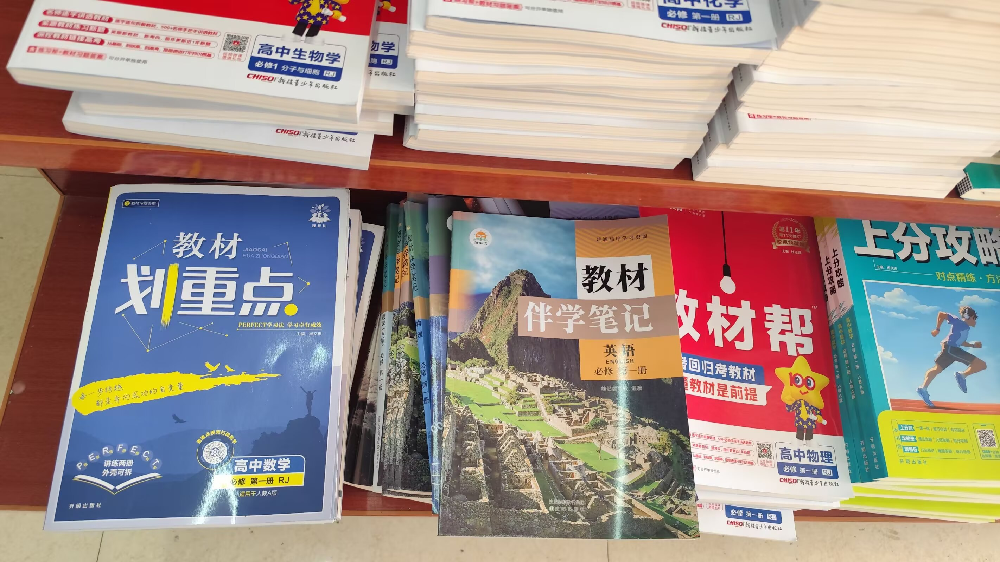
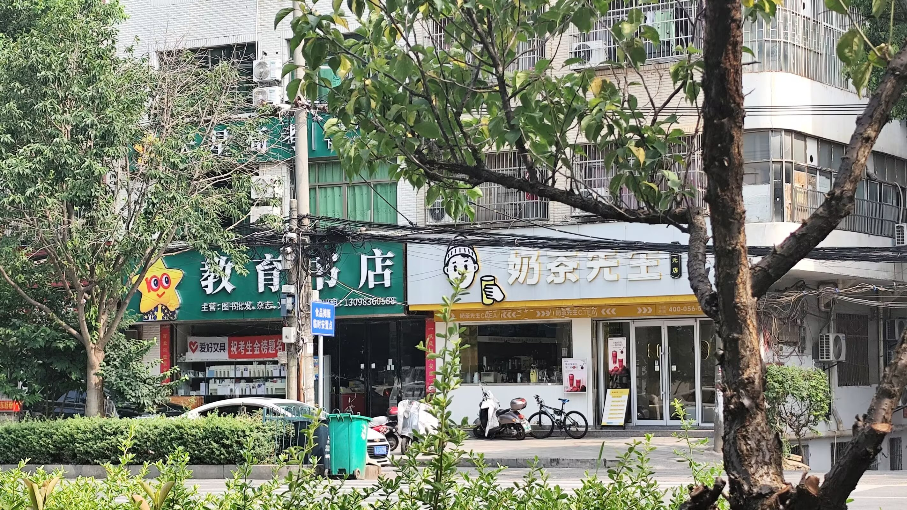
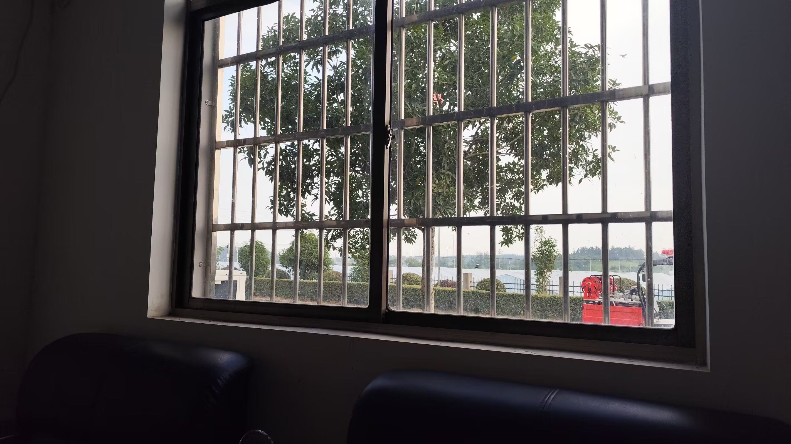
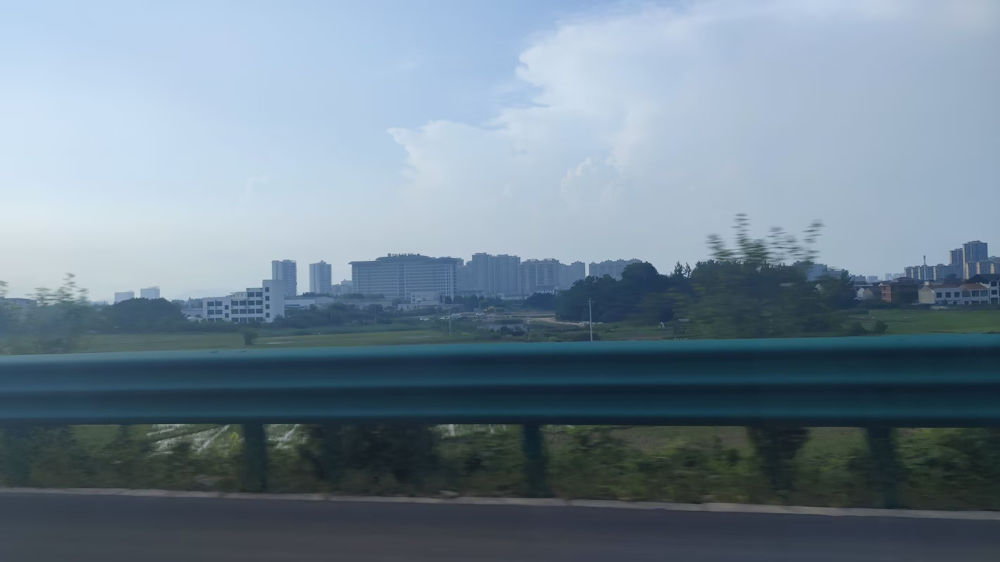
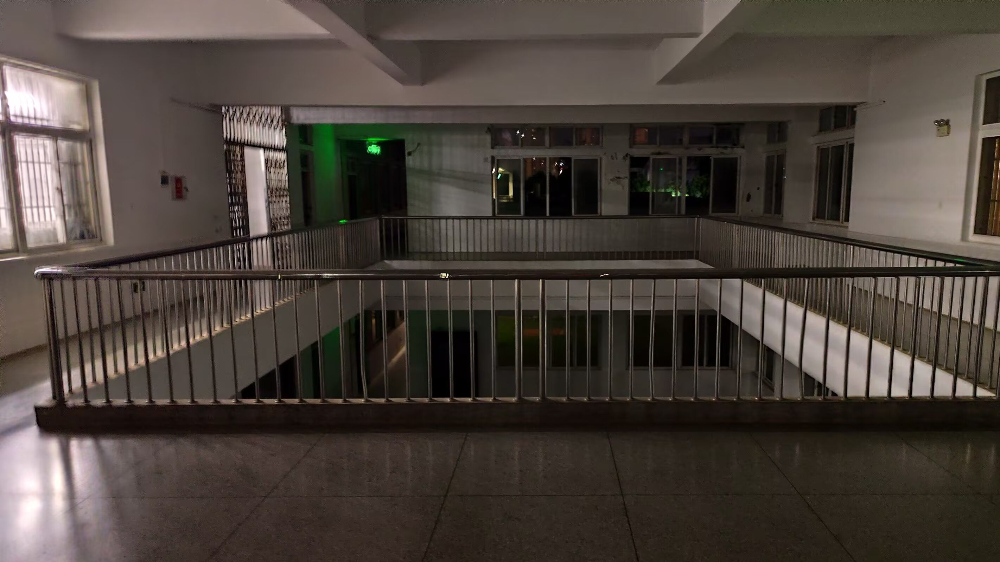
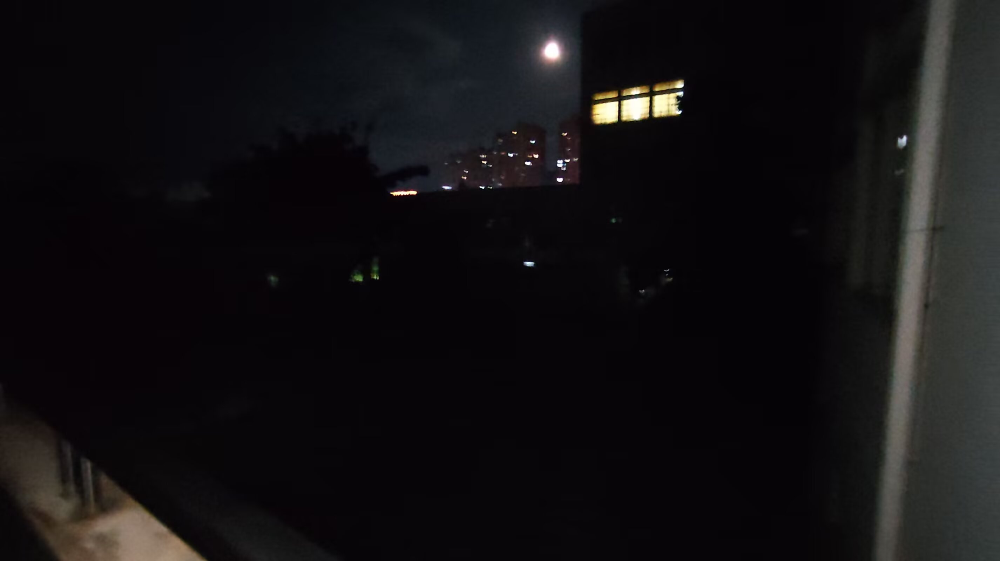
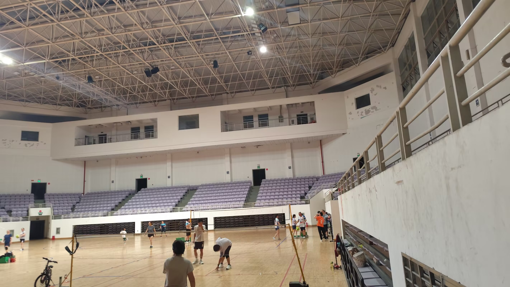
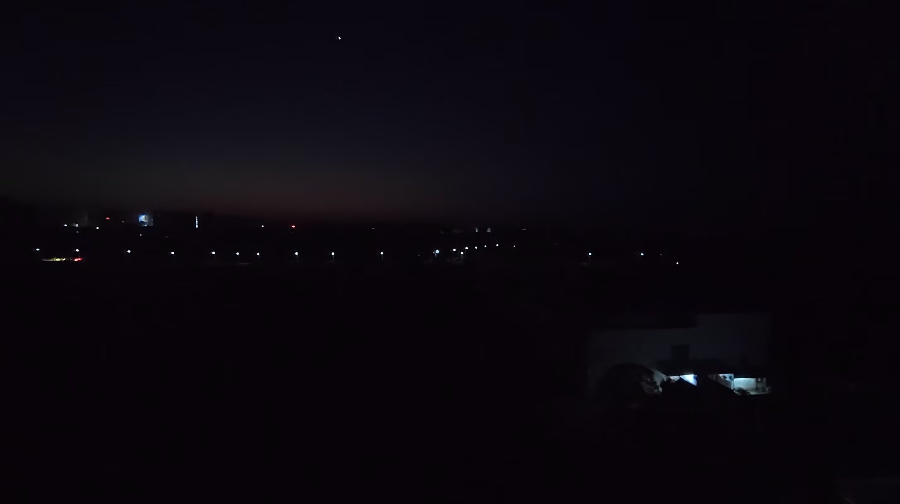
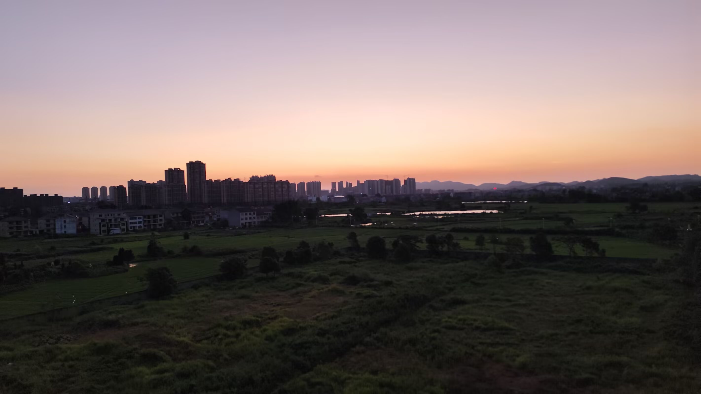
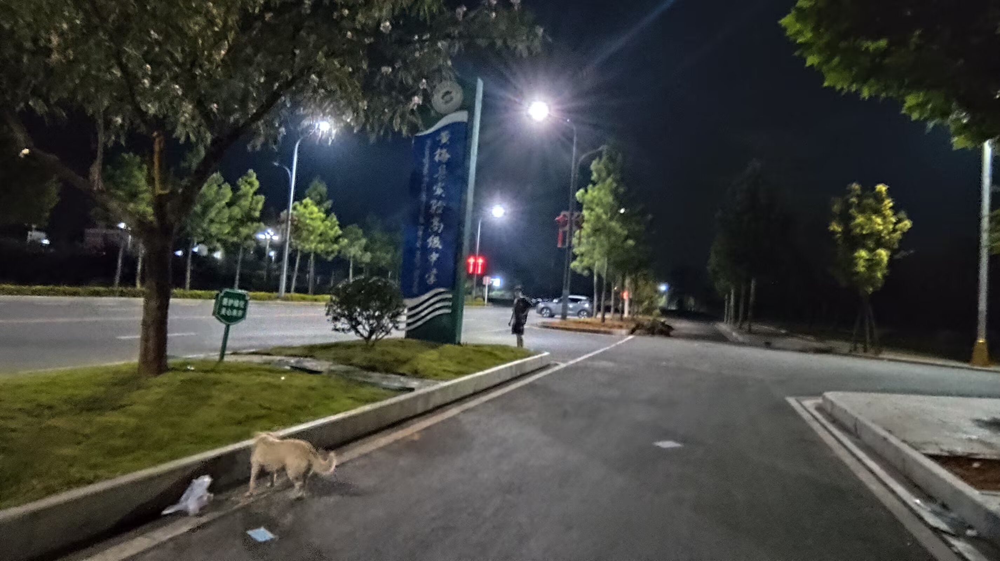
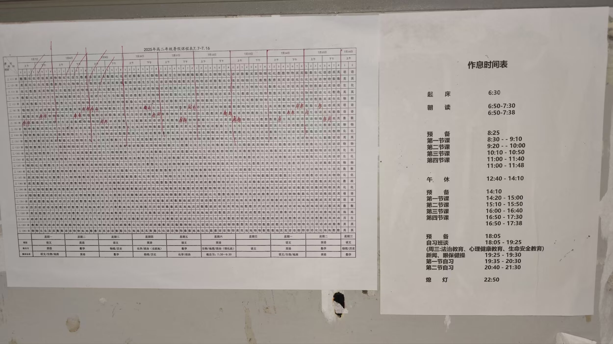
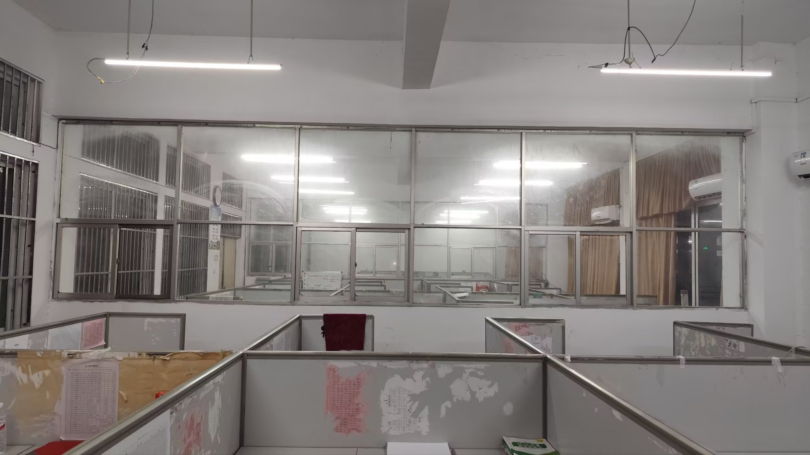
时光轴记录
黄梅上乡，在我的记忆中，是个遥远的国度。那里的人民，生活在大别山的余脉中，采茶种菜栽水稻，唱着举国皆知的黄梅戏，说着佶屈聱牙的上乡音。
赣北的年轻人就很疑惑，黄梅戏的唱腔，怎么听都像安徽话呀。学界普遍认为，1786年的一场大洪水，将黄梅采茶调送给了安徽人民！举国皆知的黄梅戏，就和黄梅各乡的方言口语无缘啦！我的一位室友在九江长大，其阿婆是安徽人，就误以为“黄梅是安徽的”。
我祖籍江西，户口黄梅，和《魔戒》中的 Frodo 一样，对乡土“夏尔国”的大半地域不甚了解。包括城关镇在内的上乡地区，还有黄梅一中、问梅村、挪步园、黄梅禅宗、四祖五祖老祖，似乎跟“台澎金马”一样神秘！
幸运的是，那股神秘感，在今年的七月上旬，彻底消失了！华科经济学院的一个索然无味的安排，让本院的两位本科生忙忙碌碌，也让外院的小槑同学卷入其中！暑期思政社会实践、乡村振兴大赛、百户千村调研活动，这三个项目，真的让人感到无言以对呢。
小槑同学在黄梅镇的潘湖路，找个旅馆就勉强接受了，也就暂住了。那里是郊区，农田旷野，郁郁青青，离黄梅一中 5.4 公里。每当日落西山，晚风微凉，他就骑着主人家的电瓶车，去一中门口的小吃街解决吃饭的问题，顺带考察一下当地的学府和商铺。
他在7月4日，参观了黄梅一中。东山问梅村、挪步园，本是在行程之内的，过后由于路程遥远，就搁置了。
总的来说，黄梅是一个慢节奏的小镇，夜生活还算丰富。一中门口就是小吃街，只有早夜经营，晚上很热闹。据说“奥尔良烤鸡腿”摊位有个师傅，之前跟同学们说，读不下去跟他学烤鸡腿，全黄梅就他和他师傅会这个！我虽然不信，但不得不承认这很有人间烟火！
7月6日的晚上，小槑骑电瓶车前往下新镇石畈村，穿过了几条高速，经过了几个社区，还见识到几个桥洞，几洼水塘，以及黑黢黢的山沟沟，最后被一群田园犬赶出了小镇。这一路，有点像黄梅下乡的孔垄、王埠、杨塘，骑车越来越颠，小动物越来越多，虫声越来越吵。山沟沟，桥洞洞，家家有狗路难走，一程山水尽不同。
离开下新镇，他便本能地前往一中小吃街，恰逢高一年级学期结束。同学们满心欢喜，有吃有喝，活蹦乱跳，把握这珍贵的暑假！有一说一，黄梅一中的校服挺好看的，肩袖是淡紫色的，很典雅清新！
当时经营“奥尔良烤鸡腿”摊位的是一位阿姨和一个小哥，他们推荐的绿豆冰沙真不错啊，清香纯甜，入口即化，舌上留甘。估计只有黄梅一中的学子，能够享受到世间如此的美味！
值得一提的是，黄梅的商铺，空调开得并不勤快。小槑在喻家山，害怕被空调吹感冒，总是随手提着一件正装夹克。来到黄梅镇，夹克衫只能用来接汗了，接的全是左手小臂上的汗。老天爷呀，下场雨吧，给汗身火热的黄梅人民降降温吧！
7月9日的晚上，小槑又一次走进黄梅一中，无意中发现：高二年级26个班！小小的黄梅，大大的学府！
最后还是有点遗憾，没有去成问梅村和挪步园。从黄梅一中出发，到东山问梅村，要走11.5公里；到挪步园，要走27公里。有些伤感，前途光明我看不见，道路曲折我走不完啊。悠悠苍天，何薄于我？造孽啊，以后再来逛逛吧。
别了，黄梅的学府！
别了，鄂东的明珠！
柴江赣北 : 光阴真是微妙！我在黄梅东站刷身份证，通过检票口。没走出五步，广播就报告“D2182已停止检票”。我曾经总是卡点到班，今天竟然卡点上高铁，有惊无险啊！幸亏只有“惊”，才留下了故事；如果还有“险”，那就酿成了事故


In my memory, Huangmei's Shangxiang was a distant land. Its people live among the foothills of the Dabie Mountains, picking tea, growing vegetables, and planting rice paddies, singing the nationally famous Huangmei Opera, and speaking the tongue-twisting Shangxiang dialect.
Young people from northern Jiangxi are puzzled: the singing style of Huangmei Opera sounds just like Anhui dialect no matter how you hear it. Scholars generally believe that a great flood in 1786 delivered the Huangmei tea-picking tunes to the people of Anhui! Thus the nationally known Huangmei Opera has nothing to do with the vernacular spoken in the townships of Huangmei! A roommate of mine grew up in Jiujiang, and his grandmother was from Anhui, so he mistakenly believed that “Huangmei is part of Anhui.”
My ancestral home is Jiangxi, and my household registration is in Huangmei; like Frodo in The Lord of the Rings, I know little of most of my native land, “the Shire.” The Shangxiang region, including Chengguan Town, along with Huangmei No.1 Middle School, Wenmei Village, Nuobuyuan, Huangmei's Zen Buddhism, and the Fourth and Fifth Patriarchs, all seemed as mysterious as “Taiwan, Penghu, Kinmen, and Matsu”!
Fortunately, that sense of mystery vanished completely in early July of this year! A dull arrangement by the School of Economics at HUST kept two undergraduates from our own school busy, and also dragged Xiao Mei, a student from another school, into it! The three projects — summer ideological and political social practice, the rural revitalization competition, and the hundred-household, thousand-village research campaign — truly left one speechless.
Xiao Mei found a hotel on Panhu Road in Huangmei Town and reluctantly settled in, staying there for the time being. It was in the suburbs, with open farmland, lush and green, 5.4 kilometers from Huangmei No.1 Middle School. Whenever the sun set behind the western hills and the evening breeze turned cool, he would ride the landlord's electric scooter to the snack street by the school gate to solve his dinner problem, and by the way survey the local schools and shops.
On July 4, he visited Huangmei No.1 Middle School. Dongshan Wenmei Village and Nuobuyuan had been on his itinerary, but were later shelved because of the long distance.
All in all, Huangmei is a slow-paced small town with a fairly lively nightlife. Right by the school gate is the snack street, which only operates morning and night, and it is bustling in the evening. It is said that at the “Orleans roast chicken leg” stall there was a chef who once told his classmates that if they couldn't keep up with their studies, they could come learn to roast chicken legs from him — in all of Huangmei, only he and his master knew how to do it! I didn't quite believe it, but I had to admit it was full of down-to-earth charm!
On the evening of July 6, Xiao Mei rode his electric scooter to Shifan Village in Xiaxin Town, crossed several expressways, passed through several neighborhoods, and saw a few underpasses, a few ponds, and dark, pitch-black mountain ravines, before finally being chased out of the town by a pack of country dogs. Along the way, it was a bit like Konglong, Wangbu, and Yangtang in the lower countryside of Huangmei — the ride grew bumpier, the small animals grew more numerous, and the insect sounds grew noisier. Mountain ravines, underpasses, every household with a dog and roads hard to walk; a whole journey of mountains and waters, none of it the same.
After leaving Xiaxin Town, he instinctively headed for the snack street by the school, just as the first-year students' term was ending. The students were full of joy, eating and drinking, lively and bouncing, seizing this precious summer vacation! To be fair, the school uniforms of Huangmei No.1 Middle School are quite nice — the shoulder and sleeves are light purple, very elegant and fresh!
At that time, the “Orleans roast chicken leg” stall was run by an auntie and a young man, and the mung bean smoothie they recommended was truly wonderful — fragrant, pure, and sweet, melting in the mouth and leaving sweetness on the tongue. Probably only the students of Huangmei No.1 Middle School could enjoy such a delicacy in this world!
It is worth mentioning that the shops in Huangmei do not run their air conditioners very diligently. At Yujiashan, Xiao Mei was afraid of catching a cold from the air conditioning and always carried a formal jacket. Coming to Huangmei Town, the jacket could only be used to soak up sweat — all of it from his left forearm. Dear heavens, let it rain and cool down the sweating, burning people of Huangmei!
On the evening of July 9, Xiao Mei walked into Huangmei No.1 Middle School once again and made an unexpected discovery: the second-year grade has 26 classes! Such a small Huangmei, such a great school!
In the end, there is still a little regret — he never made it to Wenmei Village and Nuobuyuan. From Huangmei No.1 Middle School, it is 11.5 kilometers to Dongshan Wenmei Village and 27 kilometers to Nuobuyuan. A little melancholy: the road ahead is bright, but I cannot see it; the path is winding, and I cannot finish walking it. O vast heavens, why are you so unkind to me? What a pity — I shall come back to visit another time.
Farewell, the schools of Huangmei!
Farewell, the pearl of eastern Hubei!
Chai Jiang Ganbei: Time is truly subtle! I swiped my ID card at Huangmei East Station and passed the ticket gate. Before I had walked five steps, the announcement reported that “D2182 has stopped ticket checking.” I used to always arrive just in the nick of time for class, and today I actually boarded the high-speed train just in the nick of time — thrilling but safe! Fortunately it was only a “thrill,” which left a story behind; had there also been “danger,” it would have turned into an accident.
Dans ma mémoire, le Shangxiang de Huangmei était un pays lointain. Ses habitants vivent au pied des monts Dabie, cueillant le thé, cultivant les légumes et plantant le riz, chantant le célèbre opéra de Huangmei et parlant le dialecte rébarbatif du Shangxiang.
Les jeunes du nord du Jiangxi s'interrogent : le chant de l'opéra de Huangmei ressemble pourtant à l'accent de l'Anhui. Les chercheurs estiment généralement qu'une grande inondation de 1786 a offert les airs de cueillette du thé de Huangmei au peuple de l'Anhui ! C'est ainsi que le célèbre opéra de Huangmei n'a plus aucun lien avec les parlers des villages de Huangmei ! Un de mes colocataires a grandi à Jiujiang, et sa grand-mère était de l'Anhui, si bien qu'il croyait à tort que “Huangmei fait partie de l'Anhui”.
Mon pays d'origine est le Jiangxi et mon état civil est à Huangmei ; comme Frodo dans Le Seigneur des Anneaux, je connais mal la plus grande partie de ma terre natale, “la Comté”. La région du Shangxiang, y compris le bourg de Chengguan, ainsi que le lycée n°1 de Huangmei, le village de Wenmei, Nuobuyuan, le bouddhisme Chan de Huangmei et les Quatrième et Cinquième Patriarches, tout cela semblait aussi mystérieux que “Taïwan, Penghu, Kinmen et Matsu” !
Heureusement, ce sentiment de mystère a complètement disparu au début du mois de juillet de cette année ! Un arrangement insipide de l'École d'économie de HUST a occupé deux étudiants de premier cycle de notre école et a entraîné Xiao Mei, un étudiant d'une autre école, dans l'affaire ! Les trois projets — la pratique sociale idéologique et politique d'été, le concours de revitalisation rurale et l'enquête de recherche “cent foyers, mille villages” — laissaient vraiment sans voix.
Xiao Mei a trouvé un hôtel sur la route de Panhu, dans le bourg de Huangmei, et s'y est installé à contrecœur, y séjournant provisoirement. C'était en banlieue, avec des champs ouverts, verdoyants, à 5,4 kilomètres du lycée n°1 de Huangmei. Chaque fois que le soleil se couchait derrière les collines de l'ouest et que la brise du soir devenait fraîche, il enfourchait le scooter électrique de son hôte pour se rendre à la rue des snacks devant le lycée afin de régler son problème de dîner, tout en observant les écoles et les boutiques locales.
Le 4 juillet, il a visité le lycée n°1 de Huangmei. Le village de Dongshan Wenmei et Nuobuyuan figuraient à son programme, mais ont été laissés de côté ensuite en raison de la longue distance.
Dans l'ensemble, Huangmei est une petite ville au rythme lent, avec une vie nocturne plutôt animée. Devant le lycée se trouve la rue des snacks, ouverte seulement matin et soir, très animée le soir. On raconte qu'au stand des “cuisses de poulet rôties à l'Orléans”, il y avait un cuisinier qui disait autrefois à ses camarades que s'ils n'arrivaient pas à suivre leurs études, ils pourraient venir apprendre auprès de lui à rôtir des cuisses de poulet — dans tout Huangmei, seuls lui et son maître savaient le faire ! Je n'y croyais pas tout à fait, mais je devais admettre que cela avait un charme bien humain et chaleureux !
Le soir du 6 juillet, Xiao Mei a pris son scooter électrique pour se rendre au village de Shifan, dans le bourg de Xiaxin, a traversé plusieurs autoroutes, traversé plusieurs quartiers, et a vu quelques passages inférieurs, quelques étangs, ainsi que des ravins de montagne noirs et obscurs, avant d'être finalement chassé du bourg par une meute de chiens de campagne. Tout au long du chemin, c'était un peu comme Konglong, Wangbu et Yangtang dans la campagne basse de Huangmei — la route devenait de plus en plus cahoteuse, les petits animaux de plus en plus nombreux et les chants d'insectes de plus en plus bruyants. Ravins de montagne, passages inférieurs, chaque foyer a son chien et les chemins sont difficiles ; tout un parcours de montagnes et d'eaux, jamais le même.
Après avoir quitté le bourg de Xiaxin, il s'est dirigé instinctivement vers la rue des snacks du lycée, juste au moment où le semestre des élèves de première année se terminait. Les élèves étaient pleins de joie, mangeant et buvant, sautillants et débordants d'énergie, profitant de ces précieuses vacances d'été ! Pour être honnête, l'uniforme du lycée n°1 de Huangmei est plutôt joli, avec des épaules et des manches violet clair, très élégant et frais !
À ce moment-là, le stand des “cuisses de poulet rôties à l'Orléans” était tenu par une dame et un jeune homme, et la glace pilée aux haricots mungo qu'ils recommandaient était vraiment excellente — parfumée, pure et douce, fondant en bouche et laissant une douceur sur la langue. Sans doute seuls les élèves du lycée n°1 de Huangmei pouvaient goûter un tel délice en ce monde !
Il convient de mentionner que les boutiques de Huangmei ne font pas tourner la climatisation très assidûment. À Yujiashan, Xiao Mei craignait d'attraper froid à cause de la climatisation et portait toujours une veste de costume. En arrivant au bourg de Huangmei, la veste ne pouvait plus servir qu'à essuyer la sueur — toute celle de son avant-bras gauche. Mon Dieu, faites tomber une pluie et rafraîchissez donc ce peuple de Huangmei en sueur et brûlant !
Le soir du 9 juillet, Xiao Mei est entré une nouvelle fois dans le lycée n°1 de Huangmei et y a fait une découverte inattendue : la deuxième année compte 26 classes ! Un si petit Huangmei, un si grand lycée !
Pour finir, il reste un petit regret — il n'a pas réussi à se rendre au village de Wenmei ni à Nuobuyuan. Depuis le lycée n°1 de Huangmei, il faut parcourir 11,5 kilomètres jusqu'au village de Dongshan Wenmei et 27 kilomètres jusqu'à Nuobuyuan. Un peu mélancolique : l'avenir est lumineux, mais je ne le vois pas ; la route est sinueuse, et je ne peux pas la parcourir jusqu'au bout. Ô vastes cieux, pourquoi êtes-vous si durs envers moi ? Quel dommage — je reviendrai me promener une autre fois.
Adieu, les écoles de Huangmei !
Adieu, perle de l'est du Hubei !
Chai Jiang Ganbei : le temps est vraiment subtil ! J'ai passé ma carte d'identité à la gare de Huangmei-Est et franchi le portillon. Je n'avais pas fait cinq pas que la voix annonçait : “D2182 a cessé de contrôler les billets.” J'avais toujours l'habitude d'arriver en classe à la dernière minute ; aujourd'hui, je suis monté dans le train à grande vitesse à la toute dernière minute — une belle frayeur sans mal ! Heureusement qu'il n'y a eu que la “frayeur”, ce qui nous a laissé une histoire ; s'il y avait eu en plus le “mal”, cela aurait tourné à l'accident.
In meiner Erinnerung war Shangxiang in Huangmei ein fernes Land. Seine Menschen leben in den Ausläufern des Dabie-Gebirges, pflücken Tee, bauen Gemüse an und setzen Reis, singen die landesweit berühmte Huangmei-Oper und sprechen den schwer verständlichen Dialekt von Shangxiang.
Die jungen Leute im Norden Jiangxis wundern sich: Der Gesangsstil der Huangmei-Oper klingt doch wie der Anhui-Dialekt. In der Fachwelt herrscht die Ansicht, dass eine große Flut im Jahr 1786 dem Volk von Anhui die Teepflück-Melodien aus Huangmei geschenkt hat! So hat die landesweit bekannte Huangmei-Oper nichts mehr mit den Mundarten der Dörfer von Huangmei zu tun! Ein Mitbewohner von mir wuchs in Jiujiang auf, und seine Großmutter stammte aus Anhui, sodass er fälschlich glaubte, “Huangmei gehöre zu Anhui”.
Meine angestammte Heimat ist Jiangxi, mein Haushaltsregister liegt in Huangmei; wie Frodo aus Der Herr der Ringe kenne ich den größten Teil meiner Heimat, “des Auenlandes”, kaum. Die Region Shangxiang, einschließlich der Großgemeinde Chengguan, sowie die Mittelschule Nr. 1 von Huangmei, das Dorf Wenmei, Nuobuyuan, der Chan-Buddhismus von Huangmei und der Vierte und Fünfte Patriarch — all das schien ebenso geheimnisvoll wie “Taiwan, Penghu, Kinmen und Matsu”!
Zum Glück verschwand dieses Gefühl der Geheimnisumwobenheit Anfang Juli dieses Jahres vollständig! Eine fade Veranstaltung der Fakultät für Wirtschaftswissenschaften der HUST hielt zwei Bachelorstudierende unserer eigenen Fakultät auf Trab und zog auch Xiao Mei, einen Studierenden einer anderen Fakultät, mit hinein! Die drei Projekte — die ideologische und politische Sozialpraxis im Sommer, der Wettbewerb zur Wiederbelebung des ländlichen Raums und die Forschungsaktion “Hundert Haushalte, tausend Dörfer” — ließen einen wirklich sprachlos zurück.
Xiao Mei fand ein Hotel an der Panhu-Straße in der Großgemeinde Huangmei und fand sich nur widerwillig damit ab, dort vorübergehend zu wohnen. Es lag am Stadtrand, mit offenen Feldern, üppig und grün, 5,4 Kilometer von der Mittelschule Nr. 1 von Huangmei entfernt. Wann immer die Sonne hinter den westlichen Bergen unterging und die Abendbrise kühl wurde, fuhr er mit dem Elektroroller seines Gastgebers zur Imbissstraße am Schultor, um sein Abendessen-Problem zu lösen und nebenbei die örtlichen Schulen und Geschäfte zu erkunden.
Am 4. Juli besichtigte er die Mittelschule Nr. 1 von Huangmei. Das Dorf Dongshan Wenmei und Nuobuyuan standen eigentlich auf seinem Reiseplan, wurden später jedoch wegen der weiten Entfernung zurückgestellt.
Alles in allem ist Huangmei eine gemütliche Kleinstadt mit einem recht lebhaften Nachtleben. Direkt am Schultor liegt die Imbissstraße, die nur morgens und abends geöffnet hat und abends sehr belebt ist. Es heißt, am Stand “Orleans-Roast-Chicken-Legs” habe es einen Koch gegeben, der seinen Mitschülern einst sagte, wenn sie mit dem Lernen nicht weiterkämen, könnten sie bei ihm lernen, Hähnchenschenkel zu rösten — in ganz Huangmei beherrschten nur er und sein Meister das! Ich glaubte es zwar nicht ganz, musste aber zugeben, dass darin viel Lebenswärme lag!
Am Abend des 6. Juli fuhr Xiao Mei mit dem Elektroroller ins Dorf Shifan in der Großgemeinde Xiaxin, überquerte mehrere Schnellstraßen, durchquerte mehrere Wohnviertel und bekam einige Unterführungen, ein paar Teiche sowie pechschwarze Bergschluchten zu sehen, bevor er schließlich von einer Schar Dorfhunde aus dem Städtchen vertrieben wurde. Unterwegs war es ein wenig wie in Konglong, Wangbu und Yangtang im unteren Landkreis von Huangmei — die Fahrt wurde immer holpriger, die kleinen Tiere immer zahlreicher und das Insektengezirpe immer lauter. Bergschluchten, Unterführungen, jedes Haus hat einen Hund und die Wege sind schwer zu gehen; eine ganze Strecke voller Berge und Wasser, nichts davon gleich.
Nachdem er die Großgemeinde Xiaxin verlassen hatte, fuhr er instinktiv zur Imbissstraße am Schultor, gerade als das Semester der Erstklässler zu Ende ging. Die Schüler waren voller Freude, aßen und tranken, hüpften herum und genossen diese kostbaren Sommerferien! Um ehrlich zu sein, die Schuluniform der Mittelschule Nr. 1 von Huangmei ist recht hübsch, mit hellvioletten Schultern und Ärmeln, sehr elegant und frisch!
Damals wurde der Stand “Orleans-Roast-Chicken-Legs” von einer Tante und einem jungen Mann betrieben, und das von ihnen empfohlene Mungbohnen-Eisgetränk war wirklich hervorragend — duftend, rein und süß, zerschmilzt im Mund und hinterlässt Süße auf der Zunge. Vermutlich konnten nur die Schüler der Mittelschule Nr. 1 von Huangmei solch eine Köstlichkeit auf der Welt genießen!
Erwähnenswert ist, dass die Geschäfte in Huangmei ihre Klimaanlagen nicht sonderlich fleißig laufen lassen. Auf dem Yujiashan fürchtete Xiao Mei, sich durch die Klimaanlage zu erkälten, und trug stets eine Anzugjacke bei sich. In der Großgemeinde Huangmei angekommen, konnte die Jacke nur noch zum Aufsaugen des Schweißes dienen — und zwar ausschließlich des Schweißes an seinem linken Unterarm. Du lieber Himmel, lass es regnen und kühle das schwitzende, glühende Volk von Huangmei ab!
Am Abend des 9. Juli betrat Xiao Mei erneut die Mittelschule Nr. 1 von Huangmei und machte dabei eine unerwartete Entdeckung: Die zweite Jahrgangsstufe hat 26 Klassen! Ein so kleines Huangmei, eine so große Schule!
Am Ende bleibt ein kleines Bedauern — er hat es nicht zum Dorf Wenmei und nach Nuobuyuan geschafft. Von der Mittelschule Nr. 1 von Huangmei aus sind es 11,5 Kilometer bis zum Dorf Dongshan Wenmei und 27 Kilometer bis Nuobuyuan. Ein wenig wehmütig: Der Weg vor mir ist hell, aber ich kann ihn nicht sehen; der Weg ist gewunden, und ich kann ihn nicht zu Ende gehen. O ihr weiten Himmel, warum seid ihr mir gegenüber so karg? Welch ein Jammer — ich werde ein anderes Mal wiederkommen und herumstreifen.
Leb wohl, Schulen von Huangmei!
Leb wohl, Perle Osthubeis!
Chai Jiang Ganbei: Die Zeit ist wirklich feinsinnig! Ich zog meinen Ausweis am Ostbahnhof von Huangmei durch und passierte die Fahrkartensperre. Kaum fünf Schritte gegangen, meldete die Durchsage: “D2182 hat die Fahrkartenkontrolle beendet.” Früher kam ich immer auf den letzten Drücker zum Unterricht; heute bestieg ich den Hochgeschwindigkeitszug tatsächlich auf den letzten Drücker — spannend, aber glimpflich! Zum Glück gab es nur die “Spannung”, die uns eine Geschichte hinterließ; hätte es auch die “Gefahr” gegeben, wäre daraus ein Unglück geworden.